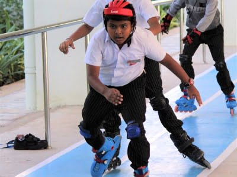
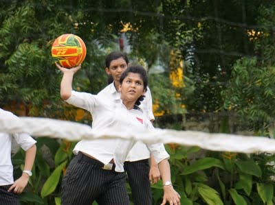

campus
-
skating
Road skating is the sport of skating (inline skating or quad roller skating) on roads, much like road cycling. It shares much with inline speed skating. Roadskaters often skate in tight packs, drafting each other and sharing the lead, which allows a pack to travel faster than an individual skater. The individual members of a pack use comparatively less energy than the lone skater traveling at the same speed. Even the lead skater in the pack enjoys an advantage from the drafting skaters behind. While gliding downhill, an inline skater in a tucked position can achieve speeds that exceed the speed of a tucked cyclist. This is due to lower wind resistance. The rolling resistance is similar for a cyclist and a skater — it is only when actively skating (i.e., in the skating stroke) that the skater incurs greater resistance. Skating is roughly 50% slower than cycling on flat ground. Skaters routinely achieve downhill speeds of 60 km/h (37 mph), similar to cyclists. Compared to cyclists, though, skaters particularly suffer on uphills, when the drafting advantage disappears. A skating paceline going down hills may easily achieve speeds faster than a cycling paceline of equal length. The reason is that the road skating paceline has a much more efficient draft effect. The draft effect in road skating is superior for three reasons: each skater can be much closer to the person in front of her, whereas each cyclist is limited by the distance of the wheels; each skater gaining inertia energy from being in the draft can translate this energy to the person in front of her by maintaining contact (usually by placing a hand on the lower back of the person in front); and the skater has much less equipment-related aerodynamic drag than the cyclist..
-
basketball and throwball
Throwball is a non-contact ball sport played across a net between two teams of nine players on a rectangular court. It is popular in Asia, especially on the Indian subcontinent, and was first played in India as a women's sport in Chennai during the 1940s. Like volleyball, the game's roots are linked with the YMCA. Both volleyball and newcomb ball, while older games, share many similarities with throwball. Throwball rules were first drafted in 1955 and India's first national level championship was played in 1980..